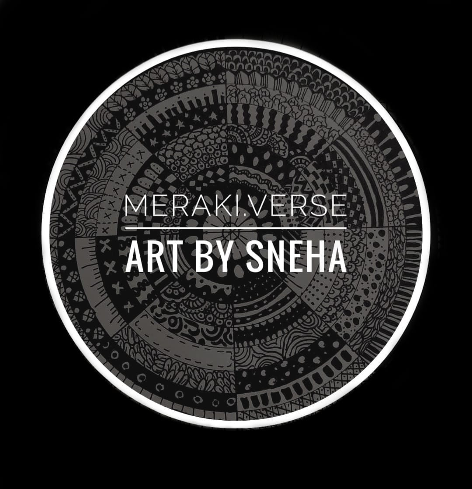

Meraki.Verse
About Me



A little about me.
Welcome to my art page!
I am Sneha Satish and I focus on creating Mandala art. That is my form of meraki.
These are neat strokes of amazing art that will bloom your wall!!
What does Meraki mean?
This is a word that modern Greeks often use to desribe doing something
with soul, creativity or love - when you put "something of yourself "
into what you're doing, whatever it may be.
What is Mandala?
Mandala is a spiritual and ritual symbol in Hinduism and Buddhism, representing the universe.
The circular designs symbolizes the idea that life is never ending and everything is connected.
The mandala also represents spiritual journey within
the individual viewer. The first level is
understanding the unity in cosmos and the second level is that each individual must find
their own place within it. Mandala designs are meant to remove irritating thoughts
and allow the creative mind
to run free as well as relaxation. But ultimately
people create and look at mandalas to centre the body and mind.
So what you waiting for? Grab the art work that you love!!
All Rights Reserved.